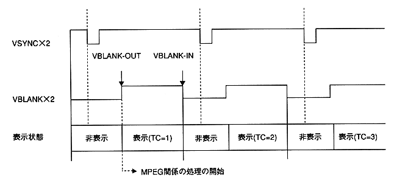

The MPEG library needs to import the latest state of the MPEG system in the CD block and update the internal state.
Therefore, call the MPG_CaptStat function for each VSYNC at one of the following timings to capture the MPEG system status.
(A) Clear MPMP flag with VBLANK-IN interrupt, and wait for it to turn on
(B) Call with VBLANK-OUT interrupt
Caution While executing the following functions, it is prohibited to execute the MPG_CaptStat function in interrupt processing.
- MPG_Init
- MPG_ResetMp
- MPG_CaptStat
- MPG_MvStart
- MPG_MvStopVideo
- MPG_MvGetVideoStat
- MPG_MvEntryNext
- MPG_MvStop
- MPG_MvStopAudio
- MPG_MvGetAudioStat
- MPG_MvChange
《Still image playback》
- MPG_SpStart
- MPG_SpGetVideoStat
- MPG_SpStop
4.3 VDP2 output mode
When outputting directly to VDP2, each function of the MPEG library is enabled at the falling edge of VSYNC. Information such as time code can be obtained currently displayed information.
Since it is difficult for the application software to obtain the VSYNC timing on this game machine, it is recommended to perform MPEG-related processing from the VBLANK-OUT timing.

Figure 4.2: Timing of processing during VDP2 output
Example of processing
(1) Wait for VBLANK-OUT.
(2) Call the MPG_CaptStat function.
(3) Get the time code.
(4) Get collision data corresponding to the time code.
(5) Perform hit judgment, etc., and make MPEG settings corresponding to the result.
(6) The setting of (5) becomes effective at the next frame.
4.4 Host transfer mode
Image data in the frame buffer is transferred to the host area by calling the MPG_WnTrans function. For example, you can turn a sprite's texture into a movie by opening a display window in the sprite's texture area and calling the MPG_WnTrans function periodically.